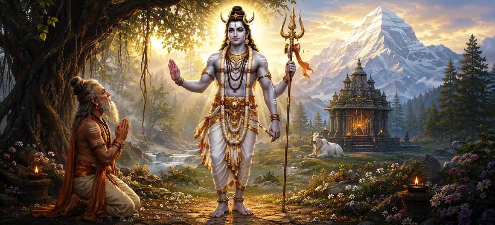

The Incarnation of Nandishvara
Chapter 6 of the Shatarudra Samhita narrates the sacred incarnation of Nandisvara and the extraordinary devotion of Sage Shilada. The story begins with Shilada's desire for a son who would be free from death and would not be born from a womb.
After Indra explains the limits of his own power, Shilada turns toward Lord Shiva and performs severe penance. Pleased by his unwavering devotion, Shiva promises to become his son in the form of Nandin.
The chapter then follows Nandin's miraculous birth, his early education, and the prophecy of his short life. Rather than surrendering to fear, Nandin declares his determination to conquer death through penance and worship of Lord Shiva.
Chapter 6 Highlights
Shilada's Devotion
Sage Shilada undertakes severe penance with an extraordinary desire for a divine, deathless son.
Indra's Guidance
Indra explains that such an extraordinary boon can only be obtained through the grace of Lord Shiva.
Shiva's Promise
Lord Shiva promises to become Shilada's son, Nandin, without being born from a womb.
Divine Birth
Nandin appears with extraordinary radiance, accompanied by divine signs and celebration among celestial beings.
Mastery of Sacred Lore
Nandin learns the Vedas and their associated branches and sacred teachings from his father.
Conquering Death
Nandin resolves to overcome death through penance and devotion to Mahadeva.
Core Topics in This Chapter
- 01 Sanatkumara's Inquiry →
- 02 Shilada's Desire for a Divine Son →
- 03 Indra's Response and Guidance →
- 04 Shilada's Severe Penance →
- 05 Shiva Grants the Boon →
- 06 The Divine Birth of Nandin →
- 07 Nandin's Human Form and Education →
- 08 The Prophecy of Mitra and Varuna →
- 09 Nandin's Resolve to Conquer Death →
- 10 The Journey Toward Penance →
Sanatkumara's Inquiry
The chapter opens with Sanatkumara asking Nandisvara to explain how he came to be born through Mahadeva and how he gained access to Shiva. The inquiry establishes the central subject of the chapter: the extraordinary origin of Nandisvara and his intimate connection with Lord Shiva.
Nandisvara responds by agreeing to narrate the story in detail, beginning with the devotion and aspiration of Sage Shilada.
Shilada's Desire for a Divine Son
Sage Shilada desired a son who would be devoted to sacred duties and free from death. His wish was unusual because he sought a child who would not be born from a womb.
With this aspiration in his heart, Shilada undertook severe austerities and first sought the favor of Indra.
Indra's Response and Guidance
Pleased by Shilada's austerities, Indra appears before him and offers to grant a boon. Shilada asks for a son who is deathless and not born from a womb.
Indra explains that he cannot grant such a boon. He states that even the great divine beings cannot ordinarily bestow such an extraordinary son. However, he directs Shilada toward Lord Shiva, explaining that Shiva alone can fulfill this exceptional desire.
Shilada's Severe Penance
After Indra departs, Shilada turns completely toward Lord Shiva. He performs severe penance day and night with unwavering concentration.
The austerity becomes so intense that a great passage of divine time occurs while Shilada remains absorbed in his practice. His physical body becomes almost entirely consumed, yet his devotion does not waver.
Shiva, pleased by this extraordinary devotion, finally appears before the sage accompanied by Parvati.
Shiva Grants the Boon
When Shilada finally opens his eyes and beholds Lord Shiva and Parvati, he bows before them with immense joy. Shiva offers him a boon and promises a son possessing profound knowledge.
Shilada, however, repeats his original desire. He asks for a son equal to Shiva, free from death, and not born from a womb.
Shiva then reveals that he will personally become Shilada's son. He declares that he will appear as Nandin without being born from a womb.
The Divine Birth of Nandin
After Shiva disappears with Parvati, Shilada returns to his hermitage and shares the divine promise with the sages. Preparations are made for a sacrificial ceremony.
Before the sacrifice begins, Nandin manifests as Shiva's son with extraordinary radiance. Divine clouds shower rain, celestial beings move through the heavens, and sages shower flowers in celebration.
Brahma, Vishnu, Shiva, Parvati, and other divine beings arrive to witness the miraculous manifestation. Nandin appears with the characteristics of Rudra, bearing extraordinary radiance and divine attributes.
Nandin's Human Form and Education
After returning to the hermitage with his father, Nandin assumes a human form. Shilada lovingly performs the appropriate post-natal rites for his son.
Shilada then educates Nandin in the sacred traditions. Within his early childhood, Nandin masters the Vedas along with their associated branches and other sacred teachings.
His learning establishes that the divine child is not merely extraordinary by birth, but is also endowed with profound knowledge and spiritual discipline.
The Prophecy of Mitra and Varuna
When Nandin reaches the age of seven, the sages Mitra and Varuna visit Shilada's hermitage at the divine command. They observe Nandin carefully.
Although they recognize that Nandin has mastered sacred knowledge, they declare that his life appears to be short and that they do not perceive a long lifespan for him.
Hearing this prediction, Shilada becomes overwhelmed with grief. He embraces his son and laments at the thought of losing him so soon.
Nandin's Resolve to Conquer Death
Seeing his father overcome by grief, Nandin remains calm. He asks Shilada why he is distressed and reassures him that death will not easily overcome him.
Shilada asks what power, knowledge, or spiritual discipline Nandin possesses that could protect him from death.
Nandin gives a decisive answer: he will overcome death through penance and by worshipping the great Lord Shiva. He does not place his confidence merely in intellectual learning, but in direct devotion and spiritual practice.
The Journey Toward Penance
Having made his resolve, Nandin bows before his father and circumambulates him with reverence. He then leaves for the forest to undertake his spiritual practice.
The chapter therefore closes at a significant turning point. Nandin's divine origin has been revealed, but his spiritual journey toward overcoming mortality is only beginning.
Key Teachings of Chapter 6
Unwavering Devotion
Shilada's prolonged austerity demonstrates the power of unwavering devotion when seeking divine grace.
Grace of Shiva
The story presents Shiva as the ultimate source of the extraordinary boon sought by Shilada.
Divine Birth
Nandin's birth reflects the fulfillment of Shiva's promise and the extraordinary nature of divine manifestation.
Knowledge and Discipline
Nandin's early mastery of sacred learning shows the importance of knowledge alongside spiritual devotion.
Faith Beyond Fear
Nandin does not surrender to the prophecy of death. He responds with confidence in Shiva and spiritual practice.
Determination
Nandin's decision to enter the forest represents the beginning of a determined spiritual quest.
Spiritual Reflection
The story of Nandisvara presents devotion as a force capable of transforming fear into determination. Shilada's severe penance shows the depth of a father's faith, while Nandin's response to the prophecy of early death reveals a different kind of spiritual strength. He does not allow fear to define his destiny. Instead, he turns toward Lord Shiva through penance and worship. The chapter therefore presents devotion not merely as an expression of emotion, but as a disciplined spiritual path through which the seeker confronts the deepest limitations of mortal existence.
Living the Message of Chapter 6
The story encourages devotees to respond to uncertainty with faith rather than immediate fear. When circumstances appear beyond one's control, the example of Shilada teaches the importance of sincere spiritual effort.
Nandin's response also teaches determination. A difficult prediction does not automatically become an accepted destiny. The seeker can respond through discipline, prayer, devotion, and sincere effort.
The chapter also reminds devotees that knowledge and devotion should support one another. Nandin becomes learned in sacred texts while remaining deeply committed to Shiva.
Key Spiritual Concepts
The divine manifestation of Nandin connected directly with Lord Shiva.
The devoted sage whose intense penance leads to the divine birth of Nandin.
Shiva's promised son who resolves to overcome death through devotion and penance.
The disciplined spiritual austerity through which Shilada and later Nandin seek divine grace.
The divine compassion through which Shiva fulfills Shilada's extraordinary request.
Nandin's spiritual determination to overcome mortality through worship of Mahadeva.
Chapter Summary
Shatarudra Samhita Chapter 6 narrates the incarnation of Nandisvara. Sage Shilada desires a son who will be deathless and not born from a womb. After Indra explains that such a boon lies beyond his power and directs Shilada toward Lord Shiva, the sage performs severe penance. Pleased with his devotion, Shiva promises to become Shilada's son named Nandin. Nandin then manifests with extraordinary divine radiance. After assuming a human form, he receives sacred education from his father and masters the Vedas and related teachings. At the age of seven, the sages Mitra and Varuna declare that his life will be short. Shilada is overcome with grief, but Nandin remains confident. He declares that he will conquer death through penance and worship of Lord Shiva and then leaves for the forest to begin his spiritual practice.
Frequently Asked Questions
① What is the primary topic of Shatarudra Samhita Chapter 6?
The chapter narrates the incarnation of Nandisvara, beginning with Sage Shilada's desire for a divine son and continuing through Nandin's decision to undertake penance to overcome death.
② Who was Shilada?
Shilada was a devoted sage who performed severe penance because he desired a son who would be free from death and not born from a womb.
③ Why did Shilada worship Lord Shiva?
Indra explained that he could not grant an immortal son not born from a womb and advised Shilada to seek Lord Shiva's grace.
④ How was Nandin born?
Shiva promised to become Shilada's son without being born from a womb. Nandin then manifested as the divine son of Shilada through Shiva's grace.
⑤ What did Nandin learn from Shilada?
Nandin mastered the Vedas, their associated branches, and other sacred teachings during his early childhood.
⑥ What did Mitra and Varuna predict?
They declared that Nandin's lifespan appeared to be short, which caused great sorrow to his father Shilada.
⑦ How did Nandin respond to the prophecy?
Nandin remained confident and declared that he would overcome death through penance and worship of the great Lord Shiva.
⑧ How does Chapter 6 lead into Chapter 7?
Chapter 6 ends with Nandin leaving for the forest to perform penance. Chapter 7 continues the story with the coronation and nuptials of Nandisvara.
“When devotion becomes unwavering, fear loses its power, and the seeker turns toward Shiva with determination.”
Continue Through Shatarudra Samhita
Chapter 6 reveals the divine origin of Nandisvara and ends with Nandin beginning his journey of penance. Continue to Chapter 7 to explore the coronation and nuptials of Nandisvara.